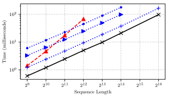
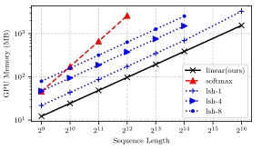
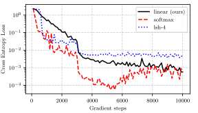

篇首导读
标准 Transformer 的自注意力要计算所有 token 两两之间的关系，时间和显存都随序列长度平方增长。这篇论文做了一件很漂亮的事：把 softmax 注意力改写成“核特征映射的点积”，再利用矩阵乘法的结合律，把计算顺序从 (QKT)V 换成 Q(KTV)，复杂度直接从 O(N²) 降到 O(N)。
更关键的是，加上因果掩码后，这个线性形式可以写成递归：维护一个随时间累加的状态 Si 和一个归一化项 Zi，每一步只做常数量的更新。于是 Transformer 在推理时等价于一个 RNN——训练时仍然可以并行，推理时每步常数内存、常数计算。论文在长序列自回归生成上报告了最高 4000 倍的加速。
怎么读：核心是 3.2 的 Eq. 5–6（结合律）和 3.3–3.4 的 Eq. 9–12、16–20（递归形式）。实验部分重点看 Figure 1 的复杂度曲线和 Table 1–3 的吞吐/质量对比。附录的梯度推导是“为什么能常数内存训练”的数学细节，可以先跳过，知道结论即可。
术语卡
完整术语表 →- Linear Attention 线性注意力
- 把注意力相似度写成核特征映射的内积，从而利用结合律先汇总 key–value，把复杂度从 O(N²) 降到 O(N)。
- Kernel Feature Map 核特征映射
- 把 query/key 映射到另一个空间，使相似度可以写成 φ(q)Tφ(k)。论文用 φ(x)=ELU(x)+1 保证相似度非负。
- Associativity 结合律
- 矩阵乘法满足 (AB)C = A(BC)。线性注意力正是通过改变括号位置，避免构造 N×N 的注意力矩阵。
- Causal Masking 因果掩码
- 自回归生成时，位置 i 只能看到 ≤ i 的位置。标准做法是给未来位置加 −∞ 掩码；线性形式则变成前缀和。
- Recurrent Formulation 递归形式
- 把因果线性注意力写成“状态随每个新 token 更新”的形式：Si = Si−1 + φ(ki)viT，于是推理等价于 RNN。
- ELU 指数线性单元
- 一种激活函数：x > 0 时等于 x，x ≤ 0 时平滑地趋近 −1。用它而不是 ReLU，是为了避免负输入时梯度为 0。
- Autoregressive Inference 自回归推理
- 逐 token 生成，每个新 token 依赖之前生成的 token。标准 Transformer 每步要重算全部历史，线性 Transformer 只更新固定大小的状态。
- Bits per Dimension 每维比特数
- 图像生成中常用的似然指标，越低越好。它和困惑度（perplexity）本质上是同一信息的两种刻度。
目录
摘要与引言
Transformer 在多项任务上取得了显著成绩，但由于复杂度随输入长度平方增长，对很长的序列慢得不可接受。为了解决这个限制，我们把自注意力表示为核特征映射的线性点积，并利用矩阵乘法的结合律，把复杂度从 O(N²) 降到 O(N)，其中 N 是序列长度。我们证明这种形式允许迭代实现，能极大加速自回归 Transformer，并揭示它与循环神经网络（RNN）的关系。我们的线性 Transformer 性能与标准 Transformer 相近，在很长序列的自回归预测上最高快 4000 倍。
Transformer 最初由 Vaswani 等人于 2017 年提出，用于神经机器翻译，此后在自然语言、音频、图像等任务上展现了惊人效果。除了监督充足的任务，Transformer 在自回归或掩码语言建模目标下预训练后，也能有效地把知识迁移到监督有限甚至无监督的任务上。
然而，这些收益往往伴随着极高的计算和内存成本。瓶颈主要来自自注意力的全局感受野：处理 N 个输入的上下文时，需要 O(N²) 的内存和时间。结果是，实际中 Transformer 训练慢、上下文长度受限。这破坏了时间上的一致性，也妨碍捕捉长期依赖。Dai 等人通过关注之前上下文的记忆来缓解后者，但牺牲了计算效率。
最近，研究者转向在不牺牲效率的前提下增加上下文长度的方法。Child 等人引入注意力矩阵的稀疏分解，把自注意力复杂度降到 O(N√N)；Kitaev 等人用局部敏感哈希进一步降到 O(N log N)，使长序列训练成为可能。但这些模型虽然能高效训练长序列，并不能加速自回归推理。
本文提出线性 Transformer：显著降低内存占用，并让计算随上下文长度线性增长。我们使用基于核的自注意力形式，以及矩阵乘法的结合律来计算注意力权重（§3.2）；并用线性复杂度、常数内存表达因果掩码（§3.3）。这揭示了 Transformer 与 RNN 的关系，使我们能以快几个数量级的速度做自回归推理（§3.4）。在图像生成和自动语音识别上的评估表明，线性 Transformer 能达到标准 Transformer 的性能水平，同时推理最高快三个数量级。
查看本节英文原文（节选）
Transformers achieve remarkable performance in several tasks but due to their quadratic complexity, with respect to the input’s length, they are prohibitively slow for very long sequences. To address this limitation, we express the self-attention as a linear dot-product of kernel feature maps and make use of the associativity property of matrix products to reduce the complexity from O(N²) to O(N), where N is the sequence length. We show that this formulation permits an iterative implementation that dramatically accelerates autoregressive transformers and reveals their relationship to recurrent neural networks. Our linear transformers achieve similar performance to vanilla transformers and they are up to 4000x faster on autoregressive prediction of very long sequences.
However, these benefits often come with a very high computational and memory cost. The bottleneck is mainly caused by the global receptive field of self-attention, which processes contexts of N inputs with a quadratic memory and time complexity O(N²). As a result, in practice transformers are slow to train and their context is limited.
In this paper, we introduce the linear transformer model that significantly reduces the memory footprint and scales linearly with respect to the context length. We achieve this by using a kernel-based formulation of self-attention and the associative property of matrix products to calculate the self-attention weights. Using our linear formulation, we also express causal masking with linear complexity and constant memory. This reveals the relation between transformers and RNNs, which enables us to perform autoregressive inference orders of magnitude faster.
相关工作
降低 Transformer 的内存开销。已有工作通过权重剪枝、权重分解、权重量化或知识蒸馏来提高内存效率。Clark 等人提出替换 token 检测（replaced token detection）的预训练目标，样本效率更高，也减少了总体计算。Lample 等人用 product-key 注意力增加任意层的容量，计算开销几乎可以忽略。这些方法能带来训练或推理加速，但时间复杂度本质上仍是序列长度的平方，无法扩展到长序列。相比之下，我们的方法在理论上（§3.2）和实验上（§4.1）都同时降低了内存和时间复杂度。
扩大自注意力的“上下文”。Dai 等人的 Transformer-XL 通过跨固定长度上下文学习依赖，在不破坏时间一致性的情况下达到语言建模 SOTA，但把之前的上下文保存在内存中会带来显著额外计算。Sukhbaatar 等人通过为每个注意力头学习最优注意力跨度来显著扩展上下文，同时控制内存和计算。注意，这两种方法的渐近复杂度与标准模型相同；我们改进的是自注意力的渐近复杂度，因此可以使用大得多的上下文。
稀疏与 LSH 注意力。与我们更相关的是 Child 等人和 Kitaev 等人的工作。前者引入注意力矩阵的稀疏分解，把长序列生成建模的总体复杂度从平方降到 O(N√N)。后者提出 Reformer，用局部敏感哈希（LSH）减少点积次数，把复杂度进一步降到 O(N log N)。但为了使用 LSH，Reformer 约束注意力中的 key 必须与 query 相同，因此不能用于 key 与 query 需要不同的解码任务。相比之下，线性 Transformer 对 query、key 没有约束，随序列长度线性扩展，并且能让自回归推理快三个数量级，验证困惑度相当。
核视角与理论分析。Tsai 等人提出 Transformer 注意力的核形式，把注意力看作对输入施加核平滑，核分数是输入之间的相似度。这个形式有助于理解注意力组件和位置嵌入。我们则用核形式来加速自注意力计算、降低复杂度；我们还观察到，只要 query、key 上的核具有非负相似度，线性注意力就能正常收敛。Cordonnier 等人证明，足够多头的多头自注意力可以表达任意卷积层；我们则证明，用自回归目标训练的自注意力层可以看作 RNN，并利用这一点显著加速自回归 Transformer 的推理。
Softmax 的线性化。多年来，softmax 一直是训练大类别分类模型的瓶颈。近期工作用特征映射的线性点积近似 softmax，通过采样加速训练。受这些工作启发，我们线性化 Transformer 中的 softmax 注意力。与本文同时，Shen 等人探索了把线性化注意力用于图像目标检测。相比之下，我们不仅线性化注意力计算，还开发了一个在训练和推理上都具备线性复杂度、常数内存的自回归 Transformer 模型；并且通过核的视角，说明每个 Transformer 都可以看作 RNN。
查看本节英文原文（节选）
Existing works seek to improve memory efficiency in transformers through weight pruning, weight factorization, weight quantization or knowledge distillation. Reducing the memory or computational requirements with these methods leads to training or inference time speedups, but, fundamentally, the time complexity is still quadratic with respect to the sequence length which hinders scaling to long sequences. In contrast, we show that our method reduces both memory and time complexity of transformers both theoretically and empirically.
Another line of research aims at increasing the “context” of self-attention in transformers. Transformer-XL achieves state-of-the-art in language modeling by learning dependencies beyond a fixed length context without disrupting the temporal coherence. However, maintaining previous contexts in memory introduces significant additional computational cost. In contrast, we improve the asymptotic complexity of the self-attention, which allows us to use significantly larger context.
More related to our model are the works of Child et al. and Kitaev et al. Reformer reduces complexity to O(N log N) by using locality-sensitive hashing to perform fewer dot products. Note that in order to be able to use LSH, Reformer constrains the keys, for the attention, to be identical to the queries. As a result this method cannot be used for decoding tasks where the keys need to be different from the queries. In comparison, linear transformers impose no constraints on the queries and keys and scale linearly with respect to the sequence length.
线性 Transformer
本节形式化我们提出的线性 Transformer。我们说明：把传统的 softmax 注意力换成基于特征映射的点积注意力，可以获得更好的时间、内存复杂度，并得到一个能像 RNN 一样线性时间生成序列的因果模型。§3.1 先介绍 Vaswani 等人的 Transformer 形式；§3.2、§3.3 给出线性 Transformer；§3.4 把 Transformer 改写成 RNN。
Transformer 的形式化
令 x ∈ ℝN×F 表示 N 个 F 维特征向量组成的序列。Transformer 是一个函数 T: ℝN×F → ℝN×F，由 L 个 Transformer 层 T1(·), …, TL(·) 复合而成：
函数 fl(·) 独立地变换每个特征，通常用一个小的两层前馈网络实现。Al(·) 是自注意力函数，也是 Transformer 中唯一跨序列位置作用的部件。
自注意力函数 Al(·) 为每个位置计算所有其他位置特征表示的加权平均，权重与表示之间的相似度分数成正比。形式化地，输入序列 x 被三个矩阵投影：WQ ∈ ℝF×D、WK ∈ ℝF×D、WV ∈ ℝF×M，得到对应的 Q、K、V。所有位置的输出 Al(x) = V′ 计算如下：
Al(x) = V′ = softmax( QKT / √D ) V (2)
上式中 softmax 按行作用于 QKT。沿用常见术语，Q、K、V 分别称为“query”“key”“value”。
Eq. 2 实现了一种特定的自注意力，称为 softmax 注意力：相似度分数是 query 与 key 点积的指数。若用矩阵下标 i 取出第 i 行向量，我们可以把任意相似度函数的广义注意力写成：
如果把相似度函数替换为 sim(q, k) = exp(qTk / √D)，Eq. 3 就等价于 Eq. 2。这个定义很通用，可以定义多项式注意力、RBF 核注意力等其他实现。注意，要让 Eq. 3 构成注意力函数，对 sim(·) 的唯一约束是非负；这包括所有核 k(x, y): ℝ2×F → ℝ+。
线性注意力
给定一个具有特征表示 φ(x) 的核，我们可以把 Eq. 2 改写成：
再利用矩阵乘法的结合律，进一步化简为：
把分子写成向量化形式会更清楚：
注意，特征映射 φ(·) 按行作用于矩阵 Q 和 K。
从 Eq. 2 可以看出，softmax 注意力的计算成本随 O(N²) 增长，N 是序列长度；内存需求也一样，因为必须存储完整的注意力矩阵才能对 Q、K、V 求梯度。相比之下，Eq. 5 的线性 Transformer 时间和内存复杂度都是 O(N)：Σj φ(Kj)VjT 和 Σj φ(Kj) 只需计算一次，所有 query 复用。
对于 softmax 注意力，乘加总成本为 O(N² max(D, M))，D 是 query/key 维度，M 是 value 维度。线性注意力则先计算 C 维特征映射，随后计算新 value 需要 O(NCM) 次乘加。
上面的分析没有考虑核与特征函数的选择。注意，指数核对应的特征函数是无限维的，因此精确 softmax 注意力的线性化不可行。另一方面，多项式核有精确的有限维特征映射，并且已被证明与指数核或 RBF 核效果相当。二次多项式线性化 Transformer 的计算成本是 O(ND²M)，当 N > D² 时复杂度更有利——实际中我们正是要处理数万长度的序列。
在我们的实验中，序列相对较短，因此使用下面这个能产生非负相似度的特征映射：
其中 ELU(·) 是指数线性单元激活函数。我们选择 ELU 而不是 ReLU，是为了避免 x 为负时梯度被置为 0。这个特征映射对应的注意力函数需要 O(NDM) 次乘加。实验部分会展示，Eq. 7 的特征映射与完整 Transformer 表现相当，同时显著降低计算和内存需求。
查看本节英文原文（节选）
Given such a kernel with a feature representation φ(x) we can rewrite equation 2 as follows, and then further simplify it by making use of the associative property of matrix multiplication to: V′i = φ(Qi)T Σj=1..N φ(Kj)VjT / (φ(Qi)T Σj=1..N φ(Kj)).
From equation 2, it is evident that the computational cost of softmax attention scales with O(N²), where N represents the sequence length. The same is true for the memory requirements because the full attention matrix must be stored to compute the gradients with respect to the queries, keys and values. In contrast, our proposed linear transformer from equation 5 has time and memory complexity O(N) because we can compute Σj φ(Kj)VjT and Σj φ(Kj) once and reuse them for every query.
For our experiments, that deal with smaller sequences, we employ a feature map that results in a positive similarity function as defined below: φ(x) = elu(x) + 1, where elu(·) denotes the exponential linear unit activation function. We prefer elu(·) over relu(·) to avoid setting the gradients to 0 when x is negative.
因果掩码
Transformer 可以通过掩码注意力计算来高效训练自回归模型：位置 i 只能被位置 j 影响，当且仅当 j ≤ i，也就是说一个位置不能被它之后的位置影响。形式化地，这种因果掩码把 Eq. 3 改成：
沿用 §3.2 的思路，把掩码注意力线性化：
引入 Si 和 Zi：
Zi = Σj=1..i φ(Kj) (11)
Eq. 9 可以简化为：
注意，Si 和 Zi 可以由 Si−1 和 Zi−1 在常数时间内算出，因此带因果掩码的线性 Transformer 计算复杂度随序列长度线性增长。
但在任何深度学习框架中，直接实现 Eq. 12 都需要存储所有中间状态 Si 才能计算梯度，这会让内存消耗增加 max(D, M) 倍，妨碍因果线性注意力用于更长序列或更深模型。为此，我们把 Eq. 9 分子的梯度推导为累积和，使因果线性注意力的前向、反向传播都能在线性时间、常数内存内完成。详细推导见附录。
给定分子 V̄i 和标量损失对分子的梯度 ∇V̄iL，我们推导出：
∇φ(Ki)L = ( Σj=i..N φ(Qj) (∇V̄jL)T ) Vi (14)
∇ViL = ( Σj=i..N φ(Qj) (∇V̄jL)T )T φ(Ki) (15)
Eq. 9、13–15 中的累积和项都可以在线性时间内计算，并且对序列长度只需要常数内存。对于 C 维特征映射，算法计算复杂度为 O(NCM)，内存为 O(N max(C, M))。附录给出了分子前向、反向传播的伪代码（Algorithm 1）。
查看本节英文原文（节选）
The transformer architecture can be used to efficiently train autoregressive models by masking the attention computation such that the i-th position can only be influenced by a position j if and only if j ≤ i, namely a position cannot be influenced by the subsequent positions.
By introducing Si = Σj=1..i φ(Kj)VjT and Zi = Σj=1..i φ(Kj), we can simplify equation 9 to V′i = φ(Qi)TSi / (φ(Qi)TZi). Note that Si and Zi can be computed from Si−1 and Zi−1 in constant time hence making the computational complexity of linear transformers with causal masking linear with respect to the sequence length.
A naive implementation of equation 12, in any deep learning framework, requires storing all intermediate values Si in order to compute the gradients. This increases the memory consumption by max(D,M) times; thus hindering the applicability of causal linear attention to longer sequences or deeper models. To address this, we derive the gradients of the numerator in equation 9 as cumulative sums. This allows us to compute both the forward and backward pass of causal linear attention in linear time and constant memory.
Transformer 作为 RNN
训练自回归 Transformer 时，完整的真实序列是已知的，因此 fl(·) 和注意力计算都可以逐层并行。结果是，Transformer 的训练比 RNN 更高效。但在推理时，时间步 i 的输出是时间步 i+1 的输入，自回归模型无法并行；而且 Transformer 每步的成本不是常数，而是随当前序列长度的平方增长，因为必须对所有历史时间步计算注意力。
我们提出的线性 Transformer 结合了两者的优点：训练时计算可以并行，充分利用 GPU 等加速器；推理时每次预测的时间和内存成本是常数。这意味着我们可以像 RNN 一样，把 φ(Kj)VjT 矩阵存为内部状态，每个时间步更新它。这让推理比其他 Transformer 快数千倍。
在文献中，Transformer 常被视为与 RNN 根本不同的方法。但从 §3.3 的因果掩码形式和上面的讨论可以看出：任何带因果掩码的 Transformer 层，都可以写成“给定输入，修改内部状态，再预测输出”的模型，也就是 RNN。注意，与 Universal Transformer 不同，我们考虑的是时间上的递归，而不是深度上的递归。
下面把 Eq. 1 的 Transformer 层形式化为 RNN。得到的 RNN 有两个隐藏状态：注意力记忆 s 和归一化记忆 z。下标表示递归中的时间步：
si = si−1 + φ( xiWK ) ( xiWV )T (16–18)
zi = zi−1 + φ( xiWK ) (19)
yi = fl( φ( xiWQ )T si / ( φ( xiWQ )T zi ) + xi ) (20)
其中 xi 是某一 Transformer 层的第 i 个输入，yi 是对应的第 i 个输出。我们的形式对特征函数没有施加任何约束，理论上可以表示任何 Transformer 模型，甚至使用 softmax 注意力的模型。这个形式是理解 Transformer 与主流循环网络（如 LSTM）之间关系、以及信息存储与检索过程的第一步。
查看本节英文原文（节选）
When training an autoregressive transformer model the full ground truth sequence is available. This makes layerwise parallelism possible both for fl(·) of equation 1 and the attention computation. As a result, transformers are more efficient to train than recurrent neural networks. On the other hand, during inference the output for timestep i is the input for timestep i+1. This makes autoregressive models impossible to parallelize. Moreover, the cost per timestep for transformers is not constant; instead, it scales with the square of the current sequence length because attention must be computed for all previous timesteps.
Our proposed linear transformer model combines the best of both worlds. When it comes to training, the computations can be parallelized and take full advantage of GPUs or other accelerators. When it comes to inference, the cost per time and memory for one prediction is constant for our model. This means we can simply store the φ(Kj)VjT matrix as an internal state and update it at every time step like a recurrent neural network. This results in inference thousands of times faster than other transformer models.
In literature, transformer models are considered to be a fundamentally different approach to recurrent neural networks. However, from the causal masking formulation in §3.3 and the discussion in the previous section, it becomes evident that any transformer layer with causal masking can be written as a model that, given an input, modifies an internal state and then predicts an output, namely a Recurrent Neural Network (RNN).
实验
本节实验分析线性 Transformer 的性能。§4.1 在合成数据上评估线性化注意力的计算成本、内存消耗和收敛性；§4.2 和 §4.3 分别在图像生成和自动语音识别两个真实应用上评估。我们展示：线性 Transformer 能达到与 SOTA Transformer 架构相当的性能，同时显著减少 GPU 内存和计算量。
实验中的基线有两个：使用 softmax 注意力的完整 Transformer，以及 Reformer（一种 SOTA 加速 Transformer 架构）。Reformer 使用官方代码的 PyTorch 重实现；完整 Transformer 使用 PyTorch 默认实现。对于 Reformer，我们不使用可逆层，但这不影响结果，因为我们只测量自注意力层的内存消耗。实验中用 softmax 指标准 Transformer，linear 指我们提出的线性 Transformer，lsh-X 指 Reformer，X 是哈希轮数。
训练线性 Transformer 时使用 Eq. 7 的特征映射。代码、文档和示例见 linear-transformers.com。Eq. 13–15 的常数内存梯度计算用约 200 行 CUDA 代码实现。
合成复制任务与复杂度
为了考察线性 Transformer 的收敛性质，我们在一个带因果掩码的人工复制任务上训练：模型要复制一串符号，类似 Kitaev 等人的序列复制任务。序列最大长度 128，包含 10 种不同符号，符号之间用专门的分隔符隔开。三种方法都训练 4 层、8 个注意力头的 Transformer，批大小 64，使用 RAdam 优化器，学习率 10−3，3000 次更新后降到 10−4。Figure 2 展示了损失随梯度步数的变化：linear 平滑收敛，最终损失与 softmax 相同；由于没有哈希引入的噪声，它的损失比 lsh 更低。


在复杂度对比中，我们用不同序列长度 N ∈ {29, 210, …, 216} 的合成输入，计算注意力和梯度，测量每种 Transformer 变体的峰值 GPU 显存和所需时间。批大小与序列长度成反比，报告每个样本的时间和内存。每种方法都测到能放进 GPU 显存的最大长度；基准机器是 11GB 的 NVIDIA GTX 1080 Ti。结果，softmax 最大只能到 4,096，lsh-4 和 lsh-8 能到 16,384。正如预期，softmax 随序列长度平方增长；我们的方法在每种配置下都比基线更快、更省内存（Figure 1）。Reformer 和线性注意力都随长度线性增长；虽然 Reformer 的渐近复杂度是 O(N log N)，但 log N 足够小，对计算时间影响不大。

图像生成
Transformer 在条件或无条件自回归生成上表现很好，但采样很慢：任务本身是顺序的，而且内存随序列长度平方增长。本节训练带因果掩码的 Transformer 逐像素预测图像。我们的 bits/dim 与 softmax 注意力相当，但生成图像快 1,000 倍以上，且从第一个像素到最后一个像素，每张图的内存恒定。附录还比较了推理时缓存 key/value 的“有状态 softmax” Transformer。
| 方法 | Bits/dim | 图像/秒 | 相对速度 |
|---|---|---|---|
| Softmax | 0.621 | 0.45 | 1× |
| LSH-1 | 0.745 | 0.68 | 1.5× |
| LSH-4 | 0.676 | 0.27 | 0.6× |
| Linear（本文） | 0.644 | 142.8 | 317× |
表 1（原论文 Table 1）：MNIST 自回归图像生成。线性 Transformer 的 bits/dim 几乎与完整 softmax 相同，但吞吐高 300 倍以上。
首先在 MNIST 上评估。架构为 8 个注意力层、每层 8 个头，嵌入维度 256（每头 32 维），前馈维度是嵌入的 4 倍。输出用 10 个 logistic 的混合模型建模。使用 RAdam 优化器，学习率 10−4，训练 250 个 epoch。Reformer 基线使用 1 轮和 4 轮哈希，64 个桶，每块约 32 个元素：783 长的输入序列被分成 27 块，每块 29 个元素。由于序列只有 784 个像素，为消除批大小差异，所有方法都用批大小 10。
Table 1 显示，线性 Transformer 的最终困惑度几乎与 softmax 相同，但生成图像快 300 倍以上。这得益于低内存需求：单块 GPU 可以同时生成 10,000 张 MNIST 图像。内存对序列长度恒定，因为像素之间只需要存 si 和 zi（Eq. 18、19）；而 softmax 和 Reformer 的内存都随序列长度增长。
我们还在 CIFAR-10 上训练 16 层 Transformer，每层配置与上一个实验相同。Reformer 使用 64 个桶、83 块、每块 37 个元素（约 32）。序列长度约为 MNIST 的 4 倍，完整 Transformer 在最大的可用 GPU（24GB NVIDIA P40）上只能使用批大小 1；线性 Transformer 和 Reformer 使用批大小 4。所有模型训练 7 天。Table 2 显示，线性 Transformer 的 bits/dim 为 3.40，略优于 softmax 的 3.47，但生成速度快 4,462 倍。
| 方法 | Bits/dim | 图像/秒 | 相对速度 |
|---|---|---|---|
| Softmax | 3.47 | 0.004 | 1× |
| LSH-1 | 3.39 | 0.015 | 3.75× |
| LSH-4 | 3.51 | 0.005 | 1.25× |
| Linear（本文） | 3.40 | 17.85 | 4,462× |
表 2（原论文 Table 2）：CIFAR-10 自回归图像生成。线性 Transformer 完成 3 倍于 softmax 的 epoch，困惑度更好，生成速度快 4,000 倍。
语音识别
为了说明方法也能用于非自回归任务，我们在端到端自动语音识别中评估线性 Transformer，使用 CTC 损失。这个设置对每一帧输入非自回归地预测音素分布。数据是 80 小时的 WSJ 数据集，特征为 40 维 mel 滤波器组（不带时间差分），序列平均 800 帧，最长 2,400 帧。我们还比较了一个 3 层、隐藏大小 320 的双向 LSTM。Transformer 模型使用 9 层、6 个头，嵌入维度与图像实验相同。优化器为 RAdam，初始学习率 10−4，验证误差不再下降时减半。
所有模型都用音素错误率（PER）和每个 epoch 的训练时间评估。Table 3 显示，linear 在性能和速度上都大幅优于循环网络基线和 Reformer；softmax Transformer 的 PER 更低，但明显更慢——linear 每个 epoch 快 3 倍以上。
| 方法 | 验证 PER | 每 epoch 时间（秒） |
|---|---|---|
| Bi-LSTM | 10.94 | 1047 |
| Softmax | 5.12 | 2711 |
| LSH-4 | 9.33 | 2250 |
| Linear（本文） | 8.08 | 824 |
表 3（原论文 Table 3）：WSJ 语音识别。线性 Transformer 的 PER 优于 Bi-LSTM 和 Reformer，训练也更快；softmax 的 PER 最低但最慢。
查看本节英文原文（节选）
To examine the convergence properties of linear transformers we train on an artifical copy task with causal masking. We use a sequence of maximum length 128 with 10 different symbols separated by a dedicated separator symbol. For all three methods, we train a 4 layer transformer with 8 attention heads using a batch size of 64 and the RAdam optimizer with a learning rate of 10−3 which is reduced to 10−4 after 3000 updates. We observe that linear converges smoothly and reaches a lower loss than lsh due to the lack of noise introduced by hashing. In particular, it reaches the same loss as softmax.
We compute the attention and the gradients for a synthetic input with varying sequence lengths N ∈ {29, 210, …, 216} and measure the peak allocated GPU memory and required time for each variation of transformer. Our method is faster and requires less memory than the baselines for every configuration. We observe that both Reformer and linear attention scale linearly with the sequence length.
Our linear transformers achieve almost the same performance, in terms of final perplexity, as softmax transformers while being able to generate images more than 300 times faster. This is achieved due to the low memory requirements of our model, which is able to simultaneously generate 10,000 MNIST images with a single GPU.
结论
本文提出了线性 Transformer：一个显著降低原始 Transformer 内存和计算成本的模型。通过利用矩阵乘法的结合律，我们让自注意力的时间和内存都随序列长度线性增长。我们证明模型可以用于因果掩码，同时保持线性渐近复杂度。最后，我们把 Transformer 表达为 RNN，使自回归任务的推理快数千倍。
这个性质为未来研究打开了多个方向：RNN 和 Transformer 中信息的存储与检索；线性注意力的特征映射选择（例如用随机傅里叶特征近似 RBF 核，从而利用 softmax 预训练的模型）；以及更长上下文下的训练稳定性。
查看本节英文原文
In this work, we presented linear transformer, a model that significantly reduces the memory and computational cost of the original transformers. In particular, by exploiting the associativity property of matrix products we are able to compute the self-attention in time and memory that scales linearly with respect to the sequence length. We show that our model can be used with causal masking and still retain its linear asymptotic complexities. Finally, we express the transformer model as a recurrent neural network, which allows us to perform inference on autoregressive tasks thousands of time faster.
This property opens a multitude of directions for future research regarding the storage and retrieval of information in both RNNs and transformers. Another line of research to be explored is related to the choice of feature map for linear attention. For instance, approximating the RBF kernel with random Fourier features could allow us to use models pretrained with softmax attention.
附录：梯度推导与补充实验
附录的核心是证明：因果线性注意力的前向和反向都可以在线性时间、常数内存内完成。作者把 Eq. 9 的分子写成 V̄i = QiT Σj=1..i KjVjT，然后对 Q、K、V 分别求偏导，得到 Eq. 25–27。关键观察是：
- 对 Q 的梯度只需要前向累积和（从 1 到 i），与标准前向传播同向；
- 对 K、V 的梯度需要反向累积和（从 N 到 i），类似 RNN 中的时间反向传播（BPTT）；
- 两个累积和矩阵大小相同，都可以在线性时间内计算，不需要保存所有中间状态。
附录还给出了补充实验：训练曲线（MNIST、CIFAR-10、语音识别）、与“有状态 softmax”基线的对比，以及 CPU/GPU 单图生成延迟。一个有意思的结论是：在 CIFAR-10 上，线性 Transformer 是唯一在 CPU 上比 GPU 更快的模型——因为注意力已经变成 RNN 式的小状态更新，主要瓶颈变成了不可避免的序列外层循环。
要点回顾
- 标准自注意力的成本是 O(N²)：每个 token 与所有 token 计算注意力，还要存完整注意力矩阵。
- 线性注意力把相似度写成 φ(q)Tφ(k)，利用 (AB)C = A(BC) 先算 Σφ(k)vT，复杂度降为 O(N)。
- φ(x)=ELU(x)+1 保证相似度非负；ELU 避免负输入时梯度为 0。
- 因果掩码下，Si、Zi 可以从前一步常数时间更新，于是 Transformer 等价于 RNN。
- 训练仍然可以并行；推理每步常数内存、常数计算，长序列生成最高快 4000 倍。
- 代价是：线性注意力不是精确 softmax，特征映射的选择会影响效果；长上下文能力仍受状态容量限制。
- 对智能体开发者：这是“长上下文为什么贵”的另一半答案——标准注意力贵在平方，线性/混合注意力试图用近似换线性。